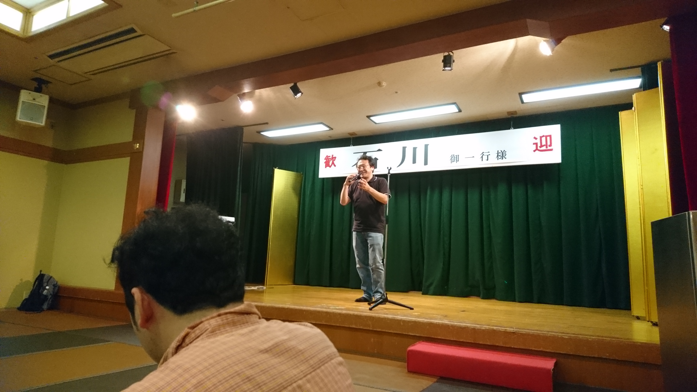
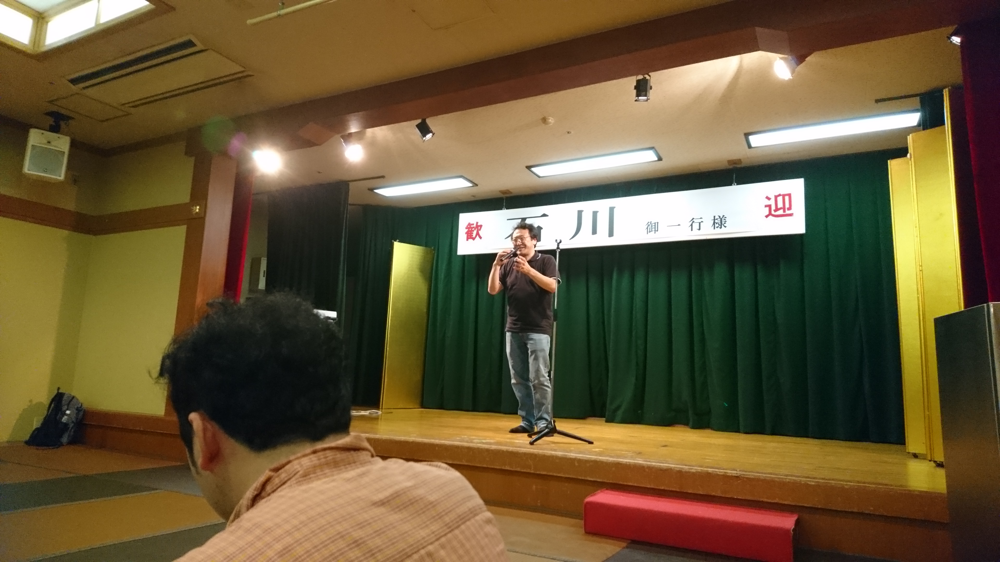

INTERACTIVE
ARTIFICIAL INTELLIGENCE
LABORATORY
INTERACTIVE
ARTIFICIAL INTELLIGENCE
LABORATORY
RESEARCH
人の知能と社会性をシミュレートするメンタライジングコンピューテーションの実現
コンピュータは人の心を理解できるか？人工知能で主流の画像認識，音声認識，自然言語解析・対話処理，知能ロボット技術を持ってしても，人の心を理解するアルゴリズムは実現できていません．歩いている人，買い物の人（レストラン選び，家電，服選び），運転中の人，見学している人，電車に乗ってる人，自動運転搭乗中の人，ロボ・エージェントと会話している人，ぼーとしている人，介護場面・学習場面の当事者，さまざまな場面で人は，何を感じ，何を考え，何を目的に行動しているのか．コンピュータが人を理解する技術の研究は，人に直接恩恵をもたらすことのできるインタラクティブAIを実現する上でもっとも重要な取り組みです．今井研究室では，機械学習をはじめとする人工知能技術を用いつつ，人の心を理解できるメンタライジングコンピューテーションの実現に向けてAIアルゴリズムの研究とインタフェースの研究に取り組んでいます.AIアルゴリズムの研究
メンタライジングコンピューテーションの実現に向けて

インタフェースの研究
インタラクティブAIの実現へ向けて
FEATURES
STATE-OF-THE-ART
CONFERENCE
ROBOT
FACILITY
COLLABORATION
IPA
WHAT's NEW
SCHEDULE
November
Lab Tour
December
Assignment
Welcome Party
January
Final
February
Lintaraction
March
Training
April
New Semester
Appreciating Cherry Blossoms
May
Softball Championship

June
Reading Articles
July
Presentation
Farewell Party
Disney


August
Curry Party
Bachelor Thesis Startup

September
Summer Camp
 

October
Yagami Festival
November
Futsal Championship
December
Bachelor Thesis Report
January
Bachelor Thesis Presentation